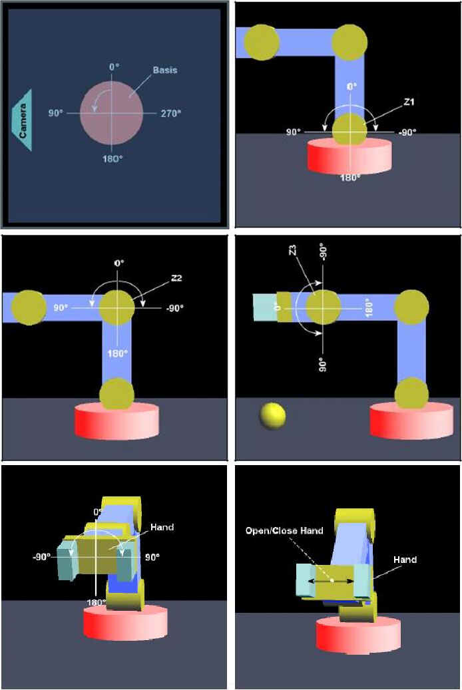

El Robot Arm 3D es un componente para la
simulación de un brazo robot en tres dimensiones que permite
comprender la cinemática de un robot de una manera sencilla.
Vemos en la figura 32 la ventana de
componente en la que se muestran las señales de entradas del
robot. También se pueden apreciar los grados de libertad o ejes
de movimiento del brazo que son tres (Z1,Z2,Z3) más la Muñeca
(Hand) y la Base (Basis)
En la muñeca el Robot tiene una pinza
mediante la cual es capaz de recoger un objeto (esfera), para lo
cual se utiliza la señal de entrada “Hand Open Close”
(abrir y cerrar pinza)
En la tabla que se muestra a continuación
quedan descritas las señales de gobierno del Robot Arm 3D
| Nombre
|
Var. |
(E/S) |
Descripción |
| Basis |
dbl |
E |
Mueve
la base del robot |
| Z1 |
dbl |
E |
Mueve
eje Z1 |
| Z2 |
dbl |
E |
Mueve
eje Z2 |
| Z3 |
dbl |
E |
Mueve
eje Z3 |
| Hand |
dbl |
E |
Girar
muñeca |
| Hand
Open Close |
bol |
E |
Abre
y cierra pinza |
Los movimientos del robot en cada uno de sus
ejes quedan mostrados en la siguiente figura, en donde
